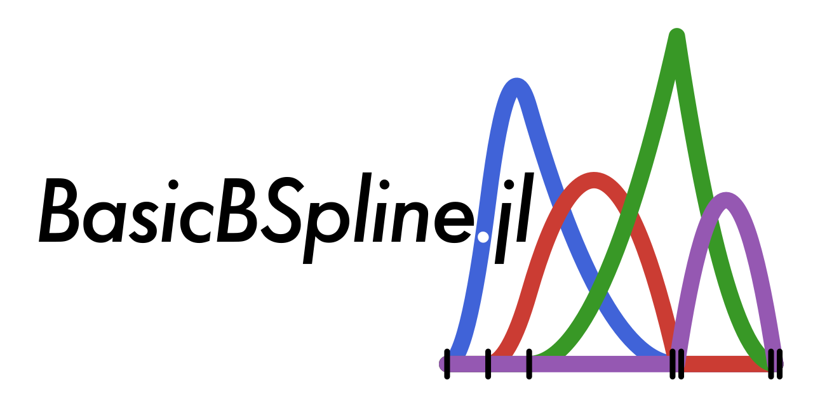
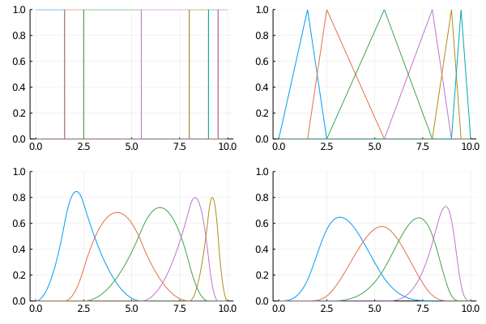
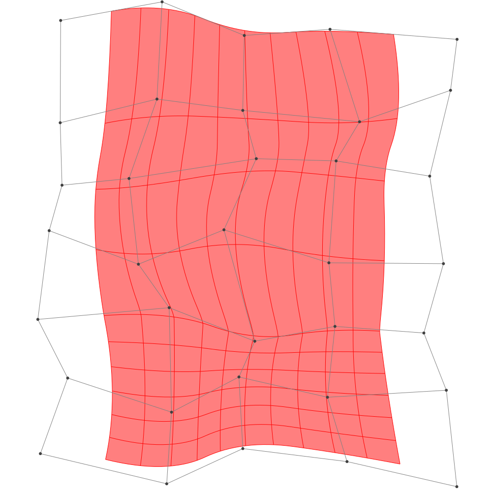
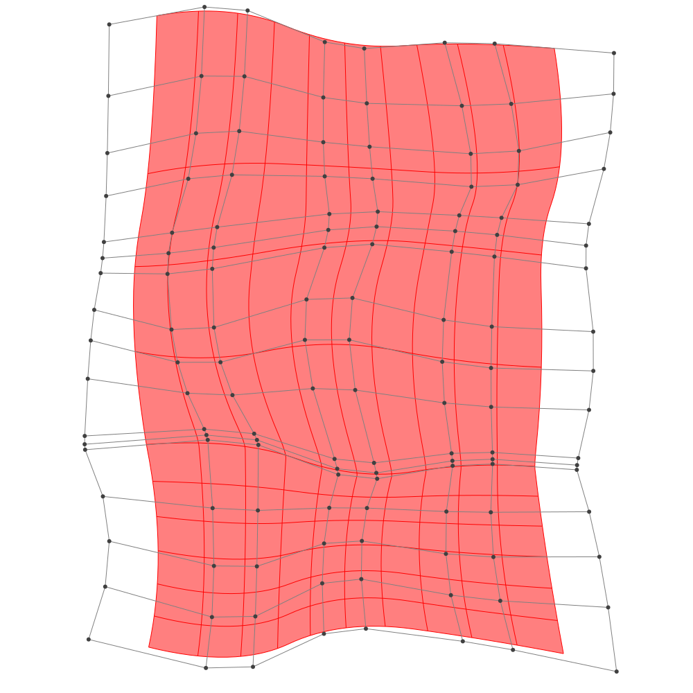
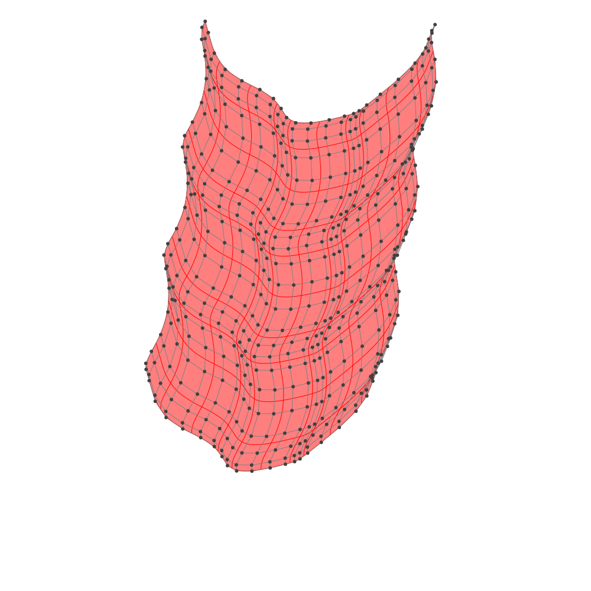
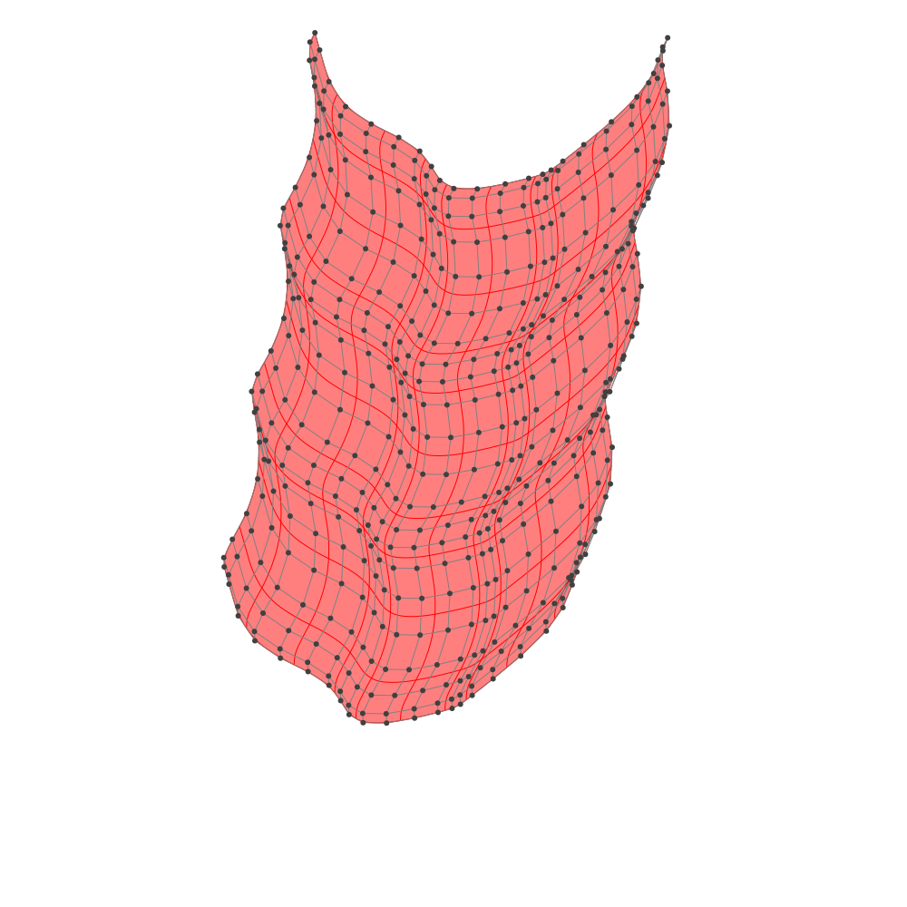

BasicBSpline.jl
Basic (mathematical) operations for B-spline functions and related things with Julia.


.

Summary
This package provides basic mathematical operations for B-spline.
- B-spline basis function
- Some operations for knot vector
- Some operations for B-spline space (piecewise polynomial space)
- B-spline manifold (includes curve, surface and solid)
- Refinement algorithm for B-spline manifold
- Fitting control points for a given function
Comparison to other B-spline packages
There are several Julia packages for B-spline, and this package distinguishes itself with the following key benefits:
- Supports all degrees of polynomials.
- Includes a refinement algorithm for B-spline manifolds.
- Delivers high-speed performance.
- Is mathematically oriented.
- Provides a fitting algorithm using least squares. (via BasicBSplineFitting.jl)
- Offers exact SVG export feature. (via BasicBSplineExporter.jl)
If you have any thoughts, please comment in:
Installation
Install this package
]add BasicBSplineQuick start
B-spline basis function
The value of B-spline basis function $B_{(i,p,k)}$ can be obtained with bsplinebasis₊₀. (example in Desmos)
\[\begin{aligned} {B}_{(i,p,k)}(t) &= \frac{t-k_{i}}{k_{i+p}-k_{i}}{B}_{(i,p-1,k)}(t) +\frac{k_{i+p+1}-t}{k_{i+p+1}-k_{i+1}}{B}_{(i+1,p-1,k)}(t) \\ {B}_{(i,0,k)}(t) &= \begin{cases} &1\quad (k_{i}\le t< k_{i+1})\\ &0\quad (\text{otherwise}) \end{cases} \end{aligned}\]
using BasicBSpline
using Plots
k = KnotVector([0.0, 1.5, 2.5, 5.5, 8.0, 9.0, 9.5, 10.0])
P0 = BSplineSpace{0}(k) # 0th degree piecewise polynomial space
P1 = BSplineSpace{1}(k) # 1st degree piecewise polynomial space
P2 = BSplineSpace{2}(k) # 2nd degree piecewise polynomial space
P3 = BSplineSpace{3}(k) # 3rd degree piecewise polynomial space
plot(
plot([t->bsplinebasis₊₀(P0,i,t) for i in 1:dim(P0)], 0, 10, ylims=(0,1), legend=false),
plot([t->bsplinebasis₊₀(P1,i,t) for i in 1:dim(P1)], 0, 10, ylims=(0,1), legend=false),
plot([t->bsplinebasis₊₀(P2,i,t) for i in 1:dim(P2)], 0, 10, ylims=(0,1), legend=false),
plot([t->bsplinebasis₊₀(P3,i,t) for i in 1:dim(P3)], 0, 10, ylims=(0,1), legend=false),
layout=(2,2),
)
You can visualize the differentiability of B-spline basis function. See Differentiability and knot duplications for details.
B-spline manifold
using BasicBSpline
using BasicBSplineExporter
using StaticArrays
p = 2 # degree of polynomial
k1 = KnotVector(1:8) # knot vector
k2 = KnotVector(rand(7))+(p+1)*KnotVector([1])
P1 = BSplineSpace{p}(k1) # B-spline space
P2 = BSplineSpace{p}(k2)
n1 = dim(P1) # dimension of B-spline space
n2 = dim(P2)
a = [SVector(2i-6.5+rand(),1.5j-6.5+rand()) for i in 1:dim(P1), j in 1:dim(P2)] # random generated control points
M = BSplineManifold(a,(P1,P2)) # Define B-spline manifold
save_png("2dim.png", M) # save image
Refinement
h-refinement
k₊=(KnotVector([3.3,4.2]),KnotVector([0.3,0.5])) # additional knot vectors
M_h = refinement(M, k₊) # refinement of B-spline manifold
save_png("2dim_h-refinement.png", M_h) # save imageNote that this shape and the last shape are equivalent.
p-refinement
p₊=(Val(1),Val(2)) # additional degrees
M_p = refinement(M, p₊) # refinement of B-spline manifold
save_png("2dim_p-refinement.png", M_p) # save image
Note that this shape and the last shape are equivalent.
Fitting B-spline manifold
Try on Desmos graphing calculator!
using BasicBSplineFitting
p1 = 2
p2 = 2
k1 = KnotVector(-10:10)+p1*KnotVector([-10,10])
k2 = KnotVector(-10:10)+p2*KnotVector([-10,10])
P1 = BSplineSpace{p1}(k1)
P2 = BSplineSpace{p2}(k2)
f(u1, u2) = SVector(2u1 + sin(u1) + cos(u2) + u2 / 2, 3u2 + sin(u2) + sin(u1) / 2 + u1^2 / 6) / 5
a = fittingcontrolpoints(f, (P1, P2))
M = BSplineManifold(a, (P1, P2))
save_png("fitting.png", M, unitlength=50, xlims=(-10,10), ylims=(-10,10)) 

If the knot vector span is too coarse, the approximation will be coarse.
p1 = 2
p2 = 2
k1 = KnotVector(-10:5:10)+p1*KnotVector([-10,10])
k2 = KnotVector(-10:5:10)+p2*KnotVector([-10,10])
P1 = BSplineSpace{p1}(k1)
P2 = BSplineSpace{p2}(k2)
f(u1, u2) = SVector(2u1 + sin(u1) + cos(u2) + u2 / 2, 3u2 + sin(u2) + sin(u1) / 2 + u1^2 / 6) / 5
a = fittingcontrolpoints(f, (P1, P2))
M = BSplineManifold(a, (P1, P2))
save_png("fitting_coarse.png", M, unitlength=50, xlims=(-10,10), ylims=(-10,10))
Draw smooth vector graphics
p = 3
k = KnotVector(range(-2π,2π,length=8))+p*KnotVector(-2π,2π)
P = BSplineSpace{p}(k)
f(u) = SVector(u,sin(u))
a = fittingcontrolpoints(f, P)
M = BSplineManifold(a, P)
save_svg("sine-curve.svg", M, unitlength=50, xlims=(-2,2), ylims=(-8,8))
save_svg("sine-curve_no-points.svg", M, unitlength=50, xlims=(-2,2), ylims=(-8,8), points=false)

This is useful when you edit graphs (or curves) with your favorite vector graphics editor.

See Plotting smooth graphs with Julia for more tutorials.